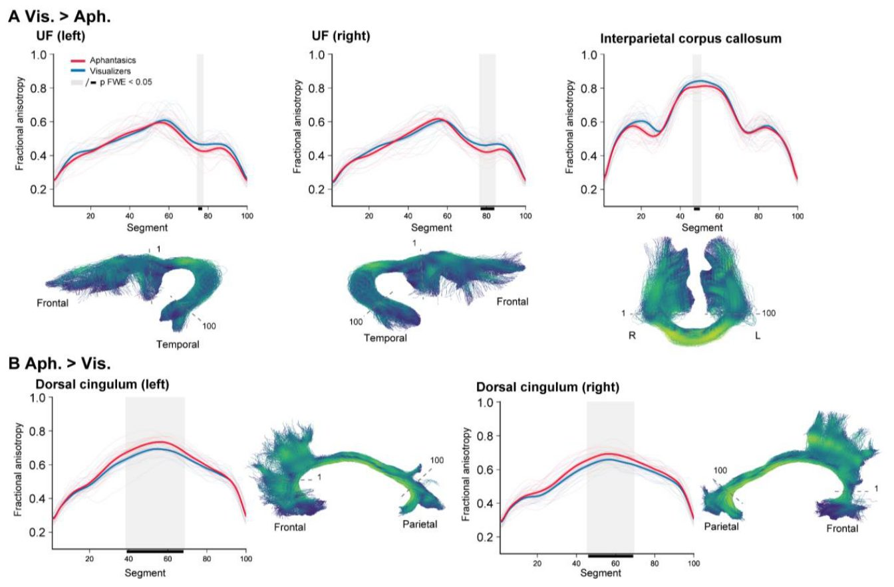
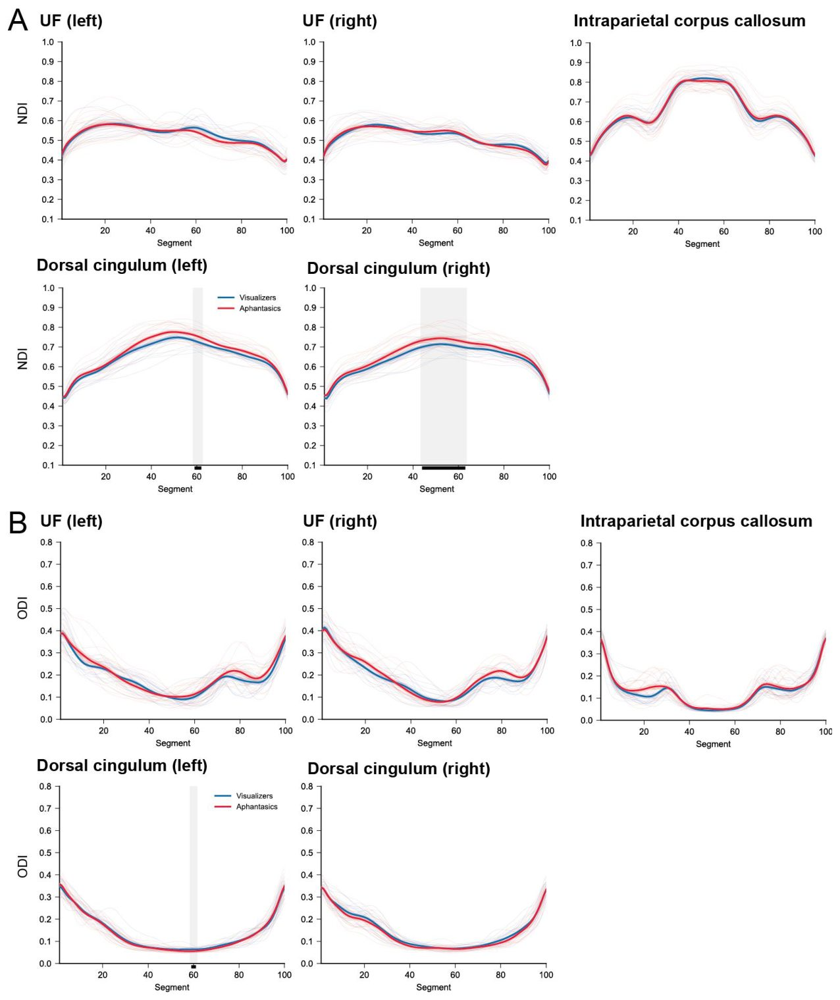
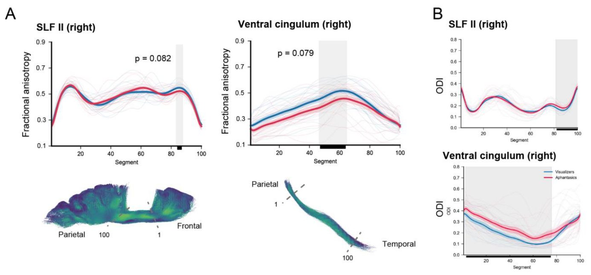
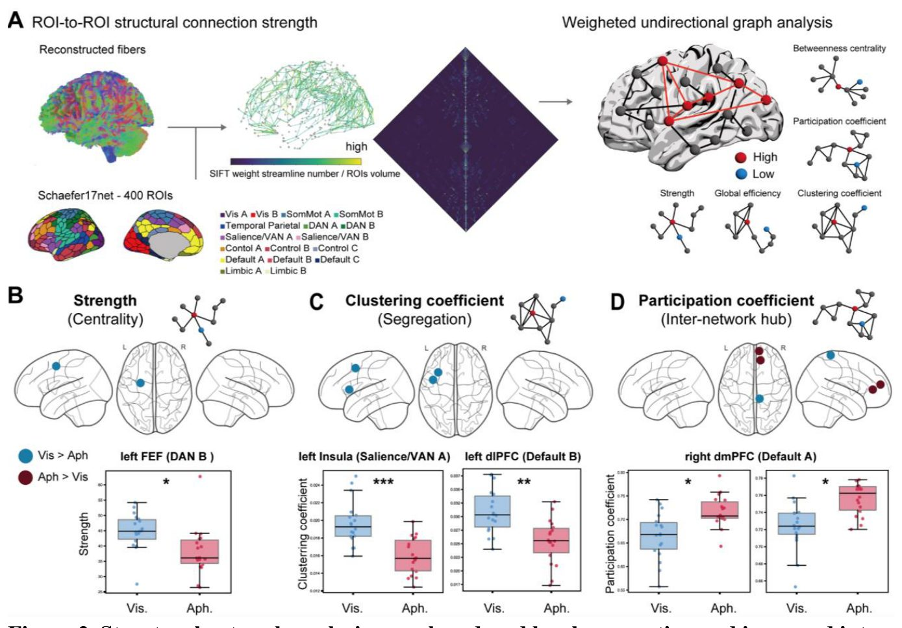
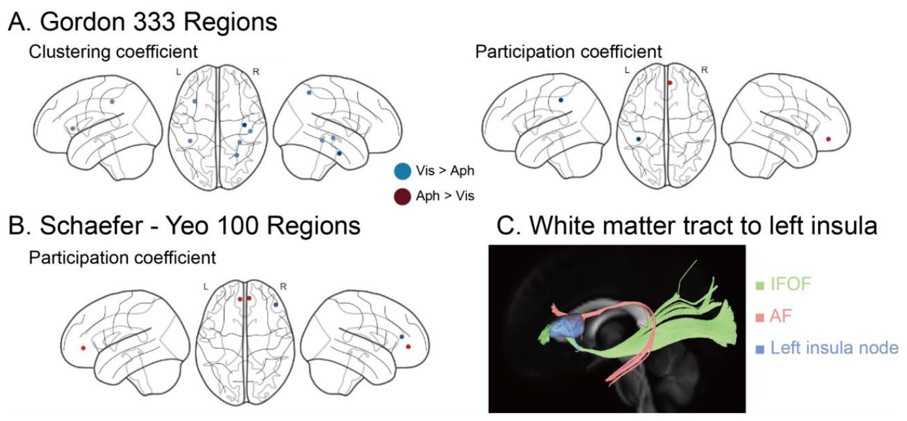
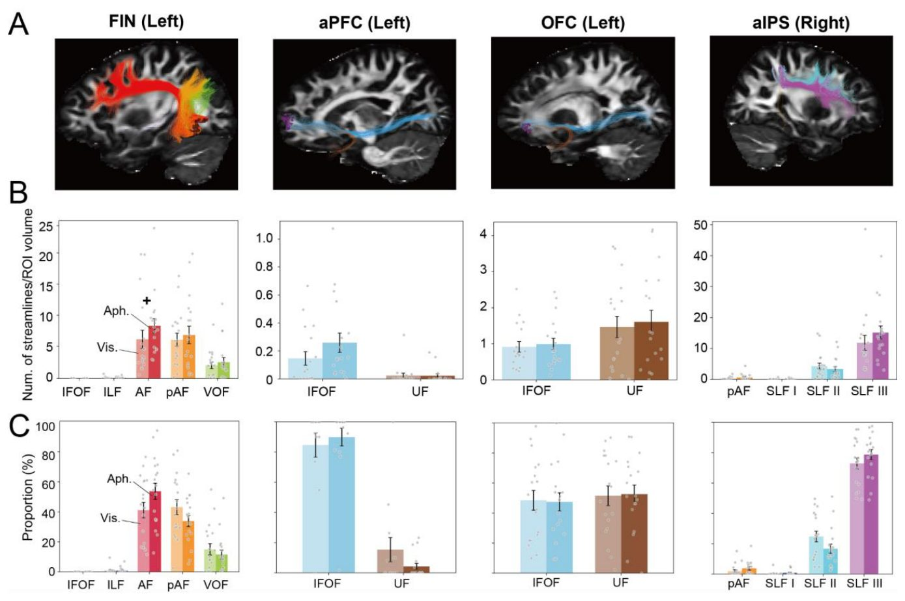
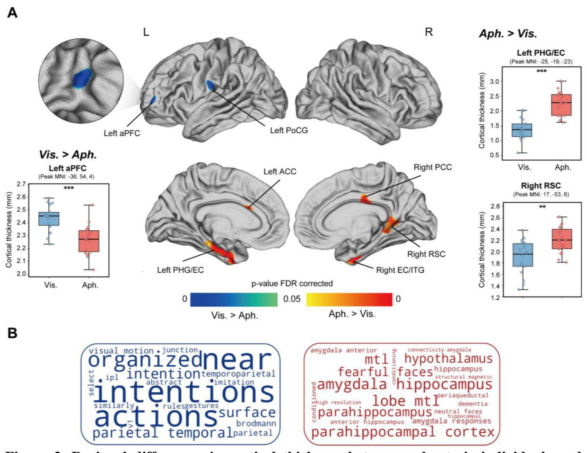
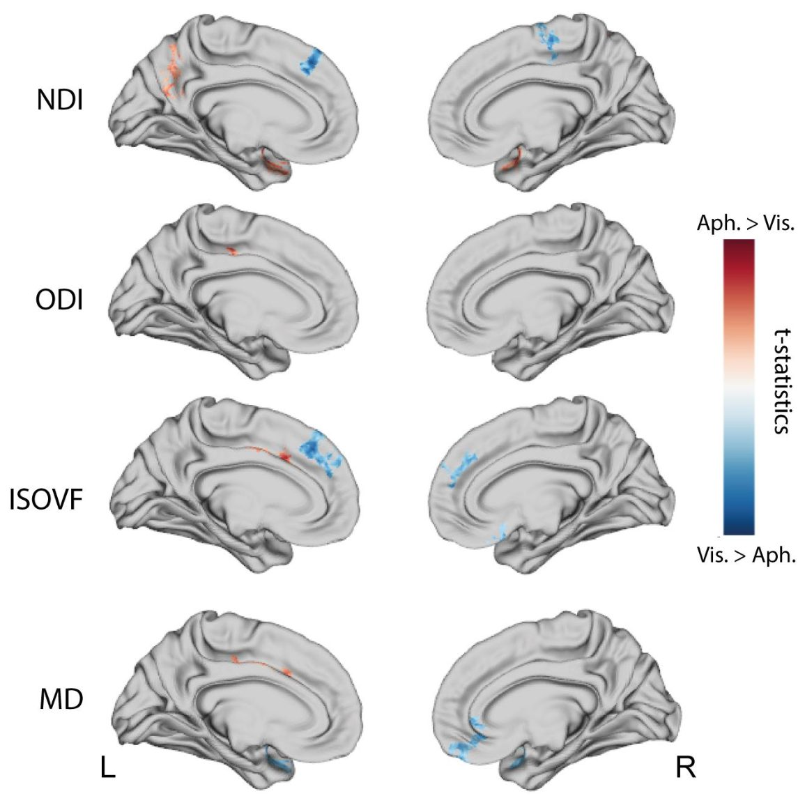
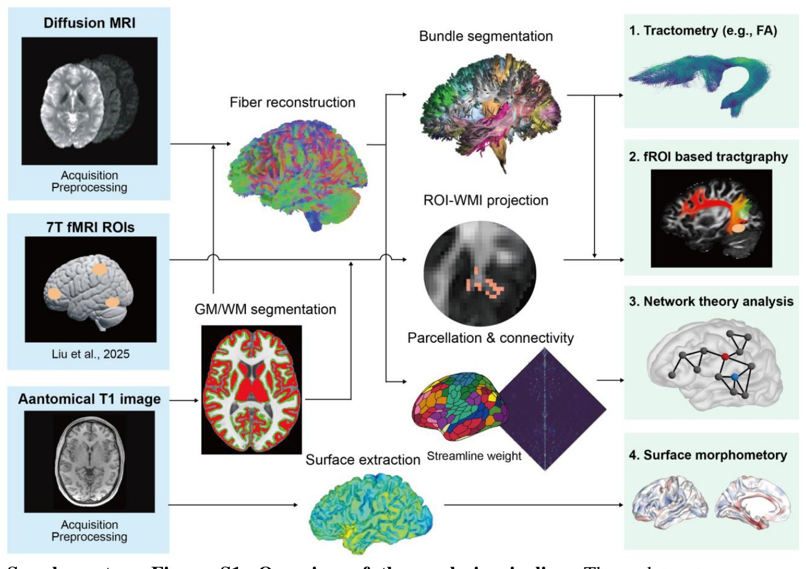

Почему мозг людей с афантазией видит иначе?
{kind=link}

Когда большинство людей закрывает глаза и пытается представить яблоко, они действительно видят его образ. Однако при врожденной афантазии эта способность отсутствует с рождения, хотя память и зрительное восприятие работают нормально. Раньше считалось, что дело в поломке зрительных зон, но свежие данные МРТ указывают на сети контроля и ассоциативные зоны.
Главное
- У людей с афантазией изменены лобно-височные и поясные пути белого вещества
- Первичная зрительная кора и основные зрительные пути остаются неизменными
- Причиной отсутствия образов могут быть сбои в сетях высшего контроля
Подробнее
Врожденная афантазия проявляется как неспособность создавать произвольные зрительные образы при сохранных базовых функциях зрения. Долгое время исследователи спорили, кроется ли причина в дефектах самих зрительных путей или в нарушении работы систем контроля высшего порядка. Чтобы разобраться в этом, ученые применили диффузионную и структурную МРТ для оценки состояния мозга.
В исследовании участвовали 18 человек с врожденной афантазией и 18 добровольцев из контрольной группы с нормальной визуализацией. Мультимодальный анализ включал оценку микроструктуры белого вещества, трактографию областей интереса, сетевую топографию и кортикометрию. Участники с афантазией продемонстрировали структурные отличия в лобно-височных и поясных путях белого вещества, включая крючковидный пучок и дорсальный циглум, а также в зонах коры вроде передней инсулы и префронтальной области.
При этом исследователи не обнаружили значимых различий в первичной зрительной коре, основных зрительных трактах или прямых связях базовой сети воображения. Полученные данные подтверждают гипотезу о том, что за отсутствие осознанных образов отвечает не деградация восприятия, а особенности интеграции в ассоциативных сетях.
Ограничения
Работа выполнена на малой выборке из 18 участников с афантазией и носит предварительный характер.
Подробный разбор статьи
Резюме
Введение
Врожденная афантазия проявляется в пожизненном отсутствии произвольных зрительных образов при сохранных зрительных знаниях, что предоставляет уникальную модель для изучения разделения сенсорных представлений и осознанного воображения. Предыдущие функциональные исследования указывают на возможное изменение нисходящих взаимодействий между системами высшего контроля и зонами высокой зрительной коры, однако особенности анатомического строения при этом состоянии оставались неизученными.
Методы
Для проверки двух конкурирующих гипотез — о наличии структурных различий либо в зрительных проводящих путях, либо в ассоциативных сетях высшего порядка — авторы применили диффузионную и структурную МРТ. В исследовании приняли участие 18 человек с врожденной афантазией и 18 сопоставимых по характеристикам контрольных испытуемых с нормальной способностью к визуализации. Был проведен комплексный мультимодальный анализ микроструктуры белого вещества, трактография на основе функциональных зон интереса, оценка графо-теоретической организации сетей и морфометрия коры головного мозга.
Пояснение
Трактография — это метод нейровизуализации на основе МРТ, который позволяет реконструировать и изучать проводящие пути белого вещества (тракты) в живом мозге.
Результаты
У людей с афантазией были обнаружены структурные отличия в лобно-височных и цингулярных путях белого вещества, включая крючковидный пучок (uncinate fasciculus), задние межполушарные волокна мозолистого тела в области межтеменной борозды и дорсальный пояс (cingulum). Кроме того, зафиксированы изменения в фронтотемпоральных корковых зонах, таких как передняя инсула, передняя префренотальная кора и медиальная височная кора. Вместе эти изменения формируют кандидатный нейроанатомический профиль для широкого когнитивно-аффективного спектра при афантазии.
Важно
Ученые не выявили значимых различий в первичной зрительной коре, основных зрительных трактах и прямых структурных связях базовой сети воображения.
Обсуждение
Полученные данные показывают, что врожденная афантазия сопровождается структурными изменениями преимущественно в лобно-височных и поясных системах, тогда как основные зрительные пути остаются неизменными.
Осторожно
Из-за относительно небольшой выборки (по 18 человек в каждой группе) результаты носят исследовательский и гипотезообразующий характер и требуют обязательного воспроизведения на более крупных выборках.
Тем не менее, эти результаты позволяют предполагать, что за отсутствие осознанных образов при афантазии отвечают системы высшего порядка, обеспечивающие интеграцию и сознательный доступ к информации, а не сами первичные зрительные представления.
Введение
Врожденная афантазия, которая проявляется как пожизненное отсутствие произвольных зрительных образов в воображении, затрагивает примерно 2–4% населения. Это феномен порождает удивительный парадокс: люди с афантазией способны точно извлекать зрительные свойства объектов из памяти и успешно справляются со многими задачами на зрительное воображение, но при этом сообщают об отсутствии или сильном снижении субъективного опыта визуализации. Подобная диссоциация показывает, что доступ к зрительным знаниям сохраняется даже при выпадении феноменологического переживания образов. Благодаря этому врожденная афантазия служит ценной моделью для изучения того, какие именно высшие механизмы необходимы для превращения внутренних представлений в осознанные зрительные образы.
Важно
Врожденная афантазия затрагивает 2–4% людей и демонстрирует парадокс: при сохранном извлечении знаний из памяти у них полностью отсутствует субъективный опыт визуализации.
Помимо отсутствия зрительного воображения, афантазия сопровождается разнообразными пожизненными когнитивными и поведенческими особенностями. Функциональные исследования показывают, что при автобиографических воспоминаниях такие люди извлекают меньше феноменологических деталей, что связано со снижением функциональной связи между гиппокампом и затылочной корой. Наблюдаются трудности в распознавании лиц и осознании эмоций, а непроизвольные навязчивые воспоминания значительно реже принимают зрительную форму. Все это указывает на то, что афантазия затрагивает распределенные сети высшего порядка, выходящие далеко за рамки первичного зрительного анализа.
Пояснение
Афантазия — нейропсихологический феномен, при котором человек не может мысленно «видеть» образы, хотя его способность мыслить логически и помнить факты остается полноценной.
Современные концепции связывают афантазию с общими нейроразвивающими механизмами, для которых характерно ослабление структурных и функциональных связей в мозге, что перекликается с сопутствующими чертами других состояний. Тем не менее, до сих пор остается неясным, опирается ли этот широкий когнитивно-аффективный профиль на единую анатомическую основу. При таких состояниях, как врожденная прозопагнозия, СДВГ и расстройства аутистического спектра, похожие разнообразные проявления обусловлены микроструктурными вариациями белого вещества при отсутствии приобретенных травм мозга. Структурная нейровизуализация помогает проверить, имеют ли функциональные изменения при афантазии схожую анатомическую базу, указывая на возможные структурные различия в зрительных, лобно-височных и цингулярных сетях.
Осторожно
Наблюдаемые когнитивные особенности при афантазии указывают на возможные изменения в различных сетях мозга, однако вопрос о едином анатомическом субстрате пока остается открытым.
Нейровизуализационные исследования афантазии предлагают три конкурирующие гипотезы, объясняющие отсутствие у людей зрительных образов. Первая — гипотеза сенсорной силы — предполагает, что причина кроется в изменениях ранних зрительных зон и путей, что снижает сенсорную интенсивность внутренних представлений. В пользу этой версии говорят отсутствие эффекта прайминга во время бинокулярного соперничества и уменьшение физиологических сигналов, таких как диаметр зрачка, при попытке воображения. Кроме того, измененное кросс-декодирование в первичной зрительной коре V1 указывает на то, что ментальные образы не достигают привычного перцептивного формата.
Вторая гипотеза, связанная с сознательным доступом, делает акцент на нарушениях нисходящей регуляции из вышестоящих отделов мозга. У людей с афантазией сохраняется активность в высоких зрительных зонах, но падает функциональная связь между узлом воображения в веретеновидной извилине (FIN) и левыми префронтальными областями, включая переднюю префронтальную кору (aPFC) и лобное поле глаз (FEF). Зоны внимания, включая FEF и переднюю инсулу, важны для усиления внутренних сигналов и их отделения от внешней стимуляции, а передняя инсула регулирует переключение между дорсальной сетью внимания и сетью пассивного режима работы мозга. Данная теория подтверждается снижением перекрытия представлений восприятия и воображения в высокоуровневых зрительных зонах и глазнично-лобной коре, а также изменением фронтопариетально-темпоральных связей.
Гипотезы формирования афантазии и цели исследования
Третья гипотеза — концепция произвольной генерации — объясняет афантазию специфическим дефицитом именно волевого запуска образов, опираясь на тот факт, что многие афантастики видят зрительные сны при бодрствовании без образов. Эта идея схожа с гипотезой сознательного доступа в части вовлечения высших структур, но расходится в деталях: дефицит волевого запуска предполагает полный отказ сенсорных представлений, тогда как теория сознательного доступа допускает их генерацию без последующего усиления до уровня осознания.
Важно
Исследования выделяют три главных взгляда на афантазию: дефект ранних зрительных путей, сбой нисходящего сознательного доступа из лобных зон и нарушение механизма произвольной генерации образов.
Указанные подходы имеют различные анатомические предсказания: гипотеза локальных зрительных путей ожидает различий в задних трактах, таких как вертикальный затылочный пучок (VOF), нижний продольный пучок (ILF) и нижний лобно-затылочный пучок (IFOF). В то же время гипотезы высшего порядка предполагают изменения фронто-темпоральных и цингulate трактов, а также крупных сетей мозга.
Целью данной работы стало выявление общих нейроанатомических маркеров когнитивно-аффективного профиля афантазии и проверка конкурирующих гипотез о природе отсутствия осознанных образов. Для этого авторы применили мультимодальную диффузионно-взвешенную и T1-взвешенную МРТ. Были объединены четыре метода: трактография на основе функциональных зон интереса (fROI), трактометрия, сетевой анализ на базе теории графов и кортикальная морфометрия на основе поверхности коры для оценки возможных различий на уровне путей, сетей и коры (см. схему анализа на рис. S1).
Пояснение
Трактометрия — это метод анализа микроструктурных свойств белого вещества вдоль всей протяженности проводящих путей мозга, позволяющий точечно выявлять патологии или особенности проводки сигналов.
Результаты
Трактометрия на основе атласа выявляет избирательные микроструктурные различия
Мы провели количественную оценку фракционной анизотропии вдоль основных трактов белого вещества, определенных по атласу, что позволило получить профильные показатели микроструктуры белого вещества. Оценивались основные пути, задействованные в зрительной обработке (VOF, IFOF, ILF), а также тракты, обеспечивающие высшие функции: лобно-теменные пути внимания (верхний продольный пучок: SLF, дугообразный пучок: AF), медиальные лобно-височные пути (крючковидный пучок: UF, вентральная цингулюм) и пути когнитивного контроля (дорсальный цингулюм).
Пояснение
> Фракционная анизотропия (FA) — это показатель того, насколько направленно вода диффундирует по волокнам белого вещества, что отражает целостность и миелинизацию проводящих путей.
Для детализации этих результатов мы проанализировали аксиальную диффузию (AD), радиальную диффузию (RD) и показатели модели NODDI в затронутых сегментах (Рис. S2 и Таблица S1). Эти дополнительные анализы согласовывались именно с микроструктурными вариациями, а не с артефактами геометрии волокон или пересекающимися путями.
{kind=link}

В правом пучке SLF-II и правом вентральном цингулюме наблюдалось небольшое снижение FA (Рис. S3); однако эти эффекты могли быть искажены сложной геометрией волокон, поэтому дальнейшей интерпретации они не подвергались.
{kind=link}

Графово-теоретический сетевой анализ выявляет нарушение сегрегации и межсетевой центральности
Затем мы применили графово-теоретический анализ, чтобы проверить, распространяются ли различия на уровне трактов на структурную организацию крупномасштабных сетей мозга. Мы построили матрицу структурной связности всего мозга размером 400 × 400 на основе парцелляции Schaefer из 17 сетей (пайплайн анализа представлен на Рис. 2A). На основе этого взвешенного неориентированного графа мы вычислили метрики узлов для характеристики организации сети. Исходя из гипотезы исследования, фокус внимания был направлен на узлы зрительной сети, сети внимания, сети салиентности и сети пассивного режима работы мозга.
{kind=link}

Межгрупповые различия были зафиксированы для трех метрик высших сетей (Рис. 2B–D; Таблица S2). У лиц с афантазией в левом полевом фронтальном поле (FEF), выступающем ключевым узлом дорсальной сети внимания (DAN B на Рис. 2A), зафиксировано снижение силы узла, что указывает на более слабую общую структурную связность в этой зоне. Левая передняя инсула (часть сети салиентности и вентрального внимания, VAN A) и левая дорсолатеральная префронтальная кора (dlPFC) из сети пассивного режима (Default B) продемонстрировали уменьшенный коэффициент кластеризации, что свидетельствует об ослаблении локальной сегрегации сетей в регионах салиентности и когнитивного контроля.
Важно
> Сетевой анализ выявил снижение силы узла в левом FEF, уменьшение коэффициента кластеризации в левой инсуле и dlPFC, а также рост коэффициента участия в правом dmPFC при афантазии.
Напротив, правая дорсомедиальная префронтальная кора (dmPFC) из сети пассивного режима (Default A) показала повышенный коэффициент участия, что говорит об усилении межсетевой интеграции (центральности) у участников с афантазией. Кроме того, в правой соматомоторной сети наблюдалось уменьшение коэффициента участия. Контрольные анализы с использованием альтернативных вариантов парцелляции подтвердили устойчивость этих результатов (Рис. S5A–B).
{kind=link}

Пояснение
> Коэффициент участия (participation coefficient) отражает то, насколько равномерно связи узла распределены между различными сетями мозга, характеризуя межсетевое взаимодействие.
Чувствительный анализ коэффициентов кластеризации не выявил значимых групповых различий (левая инсула: статистика B-M = -0.06; левая dlPFC: статистика B-M = 1.30; все pFDR > 0.86), показав, что различия кластеризации в инсуле и dlPFC не специфичны для топологии сети. Они могут отражать особенности взвешенного коннектома, такие как плотность соединений, сила или распределение весов, а не перестройку локальной кластеризации.
Трассировка прямых структурных связей показала, что левая передняя инсула соединяется главным образом через пучки AF и IFOF (Рис. S5C), в то время как связность dmPFC задействует пути дорсального цингулюма. Напротив, в исследованных узлах зрительной коры значимых отличий обнаружено не было, что согласуется с отсутствием трактометрических различий в основных зрительных путях.
Отсутствие изменений в белом веществе базовой сети визуализации
Далее мы охарактеризовали соединения белого вещества базовой сети визуализации, функциональные свойства которой изменены при афантазии. Мы определили функциональные зоны интереса (fROI) на базе результатов 7T фМРТ (Liu, Zhan, et al., 2025): FIN, левая aPFC, левая OFC и правый передний интрапариетальный зазор (aIPS). Для каждого из четырех ROI (Рис. S4A) в каждой группе мы выделили линии тока, пересекающие их проекцию на границу серого и белого вещества, и оценили структуру трактов с помощью двух индексов: нормализованного по объему количества линий тока (Рис. S4B) и доли линий тока (Рис. S4C) в анатомически определенных пучках.
{kind=link}

Осторожно
> Выводы основаны на сравнении групп с использованием нормализованного количества линий тока и байесовского анализа, однако отсутствие изменений в ряде путей требует проверки на более крупных выборках.
После поправки на множественные сравнения значимых межгрупповых различий ни по одному индексу выявлено не было. Анализ с помощью коэффициента Байеса (BF) предоставил умеренные доказательства в пользу отсутствия групповых различий для нормализованного по объему количества линий тока в пучке VOF, соединяющем FIN (BF = 0.32), что подтверждает эквивалентность путей. В совокупности эти данные указывают на отсутствие надежных изменений в прямых структурных связях внутри базовой сети визуализации.
Корковая толщина: уменьшение в левой aPFC и увеличение в лимбических областях
Наконец, мы исследовали толщину коры во всем головном мозге. Предыдущие работы связывали толщину префронтальной и ранней зрительной коры с индивидуальными различиями в яркости образного мышления, включая связь меньшего объема зоны V1 с более сильным воображением (Bergmann et al., 2016b). Поэтому мы проверили, связана ли афантазия с утолщением или увеличением площади V1.
Морфометрия коры и микроструктура белого вещества
Анализ ранних зрительных зон не выявил значимых различий между группами по толщине и объему коры. Байесовские факторы (BF) подтвердили умеренные доказательства равенства групп как для шпорной борозды (Таблица S3), так и для первичной зрительной коры V1 (Таблица S4). Напротив, полномозговой анализ показал наличие единственного значимого префронтального кластера со сниженной толщиной коры в левой передней префронтальной коре (aPFC) у участников с афантазией (Рис. 3A). Статистические параметры этого кластера приведены в Таблице S5.
{kind=link}

Таблица S5. Различия толщины коры между лицами с афантазией и визуализаторами
| Область | Размер кластера | Пиковое значение t | Пиковое значение p (FDR) | Координаты MNI (x, y, z) | g Хеджеса [Bootstrap 95% ДИ] | BF10 |
|---|---|---|---|---|---|---|
| Vis. > Aph. | ||||||
| Left aPFC | 52 | 4.68 | 0.000 | -36, 54, 4 | 1.53 [0.87, 2.53] | 433.22 |
| Left PoCG | 49 | 3.73 | 0.005 | -64, -14, 22 | 1.21 [0.55, 2.22] | 41.42 |
| Aph. > Vis. | ||||||
| Left PHG/EC | 6.83 | 0.000 | -25, -19, -23 | -2.23 [-3.27, -1.60] | 132680.97 | |
| Left ACC | 3.61 | 0.005 | -4, 18, 23 | -1.18 [-2.03, -0.57] | 31.67 | |
| Right RSC | 3.52 | 0.007 | 17, -53, 6 | -1.15 [-1.88, -0.57] | 26.20 | |
| Right EC/IFG | 4.49 | 0.000 | 32, -6, -38 | -1.46 [-2.30, -0.86] | 266.52 | |
| Right PCC | 110 | 4.41 | 0.001 | 5, -18, 29 | -1.44 [-2.17, -0.90] | 214.95 |
Significant group differences in cortical thickness are reported for clusters comprising more than 30 vertices. Group comparisons were performed using a linear model with FDR correction. aPFC: anterior prefrontal cortex; PoCG: Post central gyrus; PHG: parahippocampal gyrus; EC: Entorhinal cortex; ACC: Anterior cingulate cortex; RSC: retrosplenial cortex; PCC: Posterior cingulate cortex.
Важно
У людей с афантазией обнаружено уменьшение толщины левой aPFC и увеличение толщины в медиальных височных и лимбических зонах, а также локальные изменения микроструктуры белого вещества по данным NODDI.
В то же время, при афантазии наблюдалась повышенная толщина коры в ряде медиальных височно-лимбических областей. К ним относятся левая передняя парагиппокампальная извирина, энторинальная кора слева, а также правая энторинальная кора, ретроспленальная кора и задняя поясная кора. Дополнительный анализ методом NODDI выявил более высокие значения индекса плотности нейритов (NDI) в двусторонних медиальных височных областях и левом предклинье при афантазии (Рис. S6), что согласуется с микроструктурными перестройками в этих медиальных височных зонах.
{kind=link}

Функциональный контекст и метааналитическое декодирование
Для интерпретации обнаруженных морфологических отличий авторы провели метааналитический декомпозиционный анализ t-карт с помощью платформы Neurosynth (Рис. 3B). Левосторонний кластер aPFC продемонстрировал тесную связь с такими когнитивными терминами, как «намерения» (r = 0.26), «действия» (r = 0.25) и «близкое пространство» (r = 0.25). В свою очередь, области с утолщенной корой при афантазии коррелировали с анатомическими понятиями, включая гиппокамп, парагиппокамп и амигдалу (для всех коэффициентов r > 0.14), что обеспечивает надежную функциональную аннотацию выявленных зон.
Пояснение
Метааналитический декодинг по карте Neurosynth сопоставляет полученные координаты мозга с тысячами ранее опубликованных нейровизуализационных исследований для выявления вероятных психологических функций.
Многомерный логистический регрессионный анализ
В рамках поискового исследования применялась многомерная логистическая регрессия с регуляризацией для определения минимального набора структурных признаков, надежно разделяющих группы. Отдельные модели строились для фракционной анизотропии (FA), толщины коры и показателей теории графов, используя только те параметры, которые ранее показали межлинейные различия в одномерном анализе. Исследовательские модели продемонстрировали высокую внутреннюю дискриминационную способность: площади под ROC-кривой (AUC) превышали 0.92 для всех моделей.
Наиболее сильными независимыми предикторами афантазии в совокупности моделей оказались: сниженная FA в правом крючковидном пучке (uncinate fasciculus) и задней части мозолистого тела (interparietal corpus callosum), повышенная FA в левом дорсальном пучке поясной извирки (cingulum), сниженный коэффициент кластеризации в левой передней инсуле, уменьшенная сила узла в левом поле глаз лобной доли (FEF), уменьшенная толщина левой aPFC, а также увеличенная толщина передней парагиппокампальной и ретроспленальной коры. Полная статистика моделей представлена в дополнительном материале.
Анализ гетерогенности выборки
Учитывая потенциальную вариабельность феномена афантазии, исследователи проверили однородность дисперсии каждой переменной между группами с помощью теста Левене, несмотря на то что все участники с афантазией заявляли об пожизненном отсутствии произвольных зрительных образов. Статистически значимых различий в дисперсии между группами не обнаружено (Таблица S6), хотя при размере выборки 18 человек на группу статистическая мощность теста ограничена. Поскольку большинство испытуемых (13/18) сообщили о наличии ядерной формы афантазии, описываемый нейроанатомический профиль наиболее точно отражает именно эту подгруппу.
Осторожно
Относительно небольшая выборка (по 18 участников в каждой группе) ограничивает статистическую мощность при оценке индивидуальной гетерогенности фенотипа.
Обсуждение
Анатомические основы врожденной афантазии
В настоящей работе представлены структурные данные, которые выступают в качестве первых прямых анатомических свидетельств в пользу гипотезы о том, что врожденная афантазия связана со снижением функционального сопряжения между префронтальными системами высшего порядка и высокоуровневой зрительной корой, а не с изолированным дефицитом сенсорного представления. Комплексный анализ, включивший трактометрию, сетевой анализ и корковую морфометрию, выявил у лиц с афантазией избирательные структурные отличия, сосредоточенные во фронто-темпоральных и цингулярных системах. При этом надежных межгрупповых различий в первичной зрительной коре или в основных исследованных зрительных трактах обнаружено не было. Полученные результаты свидетельствуют о том, что врожденная афантазия затрагивает нейроанатомические изменения в распределенных, но взаимосвязанных сетках мозга высшего уровня, а не в отдельной фокальной зоне, что может объяснять ее широкий когнитивно-аффективный профиль.
Данный структурный фенотип характеризуется четырьмя ключевыми наблюдениями. Во-первых, у участников с афантазией зафиксировано снижение фракционной анизотропии (FA) в крючковидном пучке (UF) и задней части интерпариетального мозолистого тела, что указывает на изменения во фронто-темпоральных и межполушарных ассоциативных путях. Этот паттерн согласуется с ранее выявленным снижением функциональной связи между орбитофронтальной корой (OFC) и передними височными областями, которые соединяются UF, и может отражать нарушение интеграции височного мнестического контента с аффективной и перцептивной обработкой в OFC. Подобные особенности также могут быть связаны с поведенческими проявлениями афантазии, такими как измененная автобиографическая память, затрудненное распознавание лиц и сниженная эмоциональная осознанность, хотя прямые связи между структурой и функцией еще предстоит проверить в будущих исследованиях с использованием объективных метрик эпизодической памяти.
Важно
Врожденная афантазия характеризуется избирательными структурными изменениями во фронто-темпоральных и цингулярных системах, включая снижение FA в крючковидном пучке и мозолистом теле, при отсутствии изменений в первичной зрительной коре.
Во-вторых, повышение FA и плотности невриттов в дорсальной части поясной извилины (cingulum) указывает на перестройку путей когнитивного контроля. Подобное изменение может отражать влияние измененной нисходящей (top-down) регуляции на осознанный доступ к внутренним образам, что аналогично моделям при психических расстройствах, либо свидетельствовать о компенсаторном переходе на семантически управляемые незрительные процессы контроля. В-третьих, на уровне сетей афантазия сопровождалась снижением локальной сегрегации в левой передней инсуле, измененными метриками связности в лобных ассоциативных зонах и повышенной межсетевой центральностью узлов (hubness) в правой дорсомедиальной префронтальной коре (dmPFC). Указанные изменения затрагивают системы внимания, салиентности и сети пассивного режима работы мозга (default-mode), влияя на процессы внутренней переориентации внимания, связывания признаков и фильтрации сознательного доступа.
Пояснение
Фракционная анизотропия (FA) — это показатель диффузии воды в тканях мозга, который отражает степень целостности и миелинизации белого вещества.
В-четвертых, обнаружено избирательное уменьшение толщины коры в левой переднелатеральной префронтальной коре (aPFC) — области, которая ранее демонстрировала функциональную разобщенность при афантазии, что подчеркивает ее роль в высшем контроле и сознательном доступе к внутренним представлениям. Напротив, толщина коры оказалась увеличенной в медиальных височных лимбических областях, включая энторинальную кору и ретросплениальную кору, которые критически важны для пространственной ориентации, эпизодической памяти и построения воображаемых сцен. В совокупности данные трактографии и сетевого анализа локализуют обнаруженные структурные отличия преимущественно во фронто-темпоральных и цингулярных системах, связывая их с широким спектром когнитивных особенностей афантазии.
Осторожно
Настоящие данные носят корреляционный характер и получены для врожденной афантазии; для доказательства причинно-следственных связей необходимы продольные и экспериментальные исследования.
Трехэтапная модель сознательного воображения и афантазия
Полученные результаты структурной диссоциации согласуются с многостадийной моделью сознательного воображения (Liu, 2026). Согласно этой концепции, воображение опирается на три процесса: генерацию внутренних визуальных репрезентаций, их интеграцию в целостные объекты или сцены и усиление этого контента для осознанного доступа. Функциональная нейровизуализация подтверждает, что первый этап — генерация — у лиц с афантазией сохранен: зрительная кора активируется при попытках воображения, что, вероятно, связано с извлечением семантической и эпизодической информации. Наш анализ ROI подтверждает отсутствие различий в структурной связности внутри основной сети воображения между группами. Поведенческие данные также показывают, что люди с афантазией совершают целенаправленные движения глаз при мысленном исследовании карт, аналогично визуализаторам, несмотря на отсутствие ярких образов (Takamura et al., 2026).
Важно
Генерация визуальных образов при афантазии сохранена, однако последующая интеграция и осознанный доступ нарушены, что опровергает гипотезу о неспособности афантазиков к произвольному созданию сенсорных репрезентаций.
Интеграция, усиление и роль префронтальной коры
В рамках данной модели снижение яркости образов при афантазии объясняется нарушением интеграции, а ограничение сознательного доступа — дефицитом аттенционального усиления. Передняя префронтальная кора (aPFC) является ключевым кандидатом на роль регулятора этого процесса. Мы выявили уменьшение толщины коры в этой области, что согласуется с данными о снижении функциональной связи между левой aPFC и высшими отделами зрительной коры (Liu & Bartolomeo, 2025). Роль aPFC заключается не в самой генерации образов, а в волевом контроле и селекции контента. Аналогия с осознанными сновидениями, где активность aPFC коррелирует с контролем над яркостью и ясностью сна, подтверждает, что при афантазии страдает именно механизм контроля, а не способность к непроизвольной генерации образов.
Пояснение
aPFC (передняя префронтальная кора) — область мозга, отвечающая за высшие когнитивные функции, такие как планирование, саморефлексия и управление вниманием.
Нейроанатомические связи между воображением и памятью
Трехэтапная модель позволяет объяснить связь афантазии с нарушениями эпизодической памяти. Наши данные о структурных изменениях в крючковидном пучке (uncinate fasciculus), а также в энторинальной и ретроспленальной коре, указывают на вовлечение мнемонических систем в патофизиологию афантазии. Это позволяет предположить, что общие нейроанатомические изменения в лобно-височных сетях контроля и системах памяти лежат в основе обоих фенотипов. Тем не менее, поскольку наши данные носят структурный характер, они не позволяют однозначно определить, какой именно этап обработки информации является первичным звеном нарушения.
Осторожно
Данное исследование основано на структурных данных (МРТ), которые демонстрируют корреляции, но не доказывают причинно-следственную связь между конкретными анатомическими изменениями и нарушением этапов воображения.
Роль первичной зрительной коры и структурные изменения
Отсутствие значимых различий в структуре области V1 согласуется с данными о том, что первичная зрительная кора не является критически необходимой для формирования ментальных образов. Исследования пациентов с корковой слепотой показывают двойную диссоциацию: зрительное воображение может быть нарушено при сохранности V1, тогда как повреждение V1 не всегда ведет к утрате способности к визуализации. Согласно современным теоретическим моделям, активность V1 регулируется тормозными сигналами, которые подавляют спонтанную активность, не связанную с воображаемым контентом. В рамках этой гипотезы, изменения активности V1 при афантазии могут быть следствием нарушения модуляции со стороны вышестоящих сетей, а не первичным структурным дефектом. Наши данные, подтвержденные байесовскими факторами, указывают на эквивалентность большинства ранних зрительных зон, хотя вопрос о роли поверхностных U-образных волокон требует дальнейшего изучения.
Важно
Отсутствие структурных различий в V1 подтверждает гипотезу о том, что афантазия связана с дисфункцией высших когнитивных сетей, а не с дефектами первичной сенсорной обработки.
Паттерны нейроанатомических изменений
Выявленные изменения не образуют единого паттерна дефицита. Увеличение объема определенных структур при афантазии локализовано преимущественно в медиальных отделах коры и поясной извилине (дорсальный цингулюм, поясная кора, медиальная префронтальная кора). Это может указывать на перестройку систем когнитивного контроля и памяти. Подобные изменения могут носить компенсаторный характер, что подтверждается данными о том, что люди с афантазией используют альтернативные стратегии при выполнении задач на воображение и демонстрируют повышенную функциональную связность между передней поясной корой и гиппокампом.
Пояснение
Байесовский фактор — статистический показатель, позволяющий оценить вероятность того, что данные подтверждают гипотезу об отсутствии различий (эквивалентность), а не просто отсутствие доказательств обратного.
Интерпретация и ограничения
Когнитивная интерпретация результатов остается косвенной, так как функции сетей контроля и мониторинга не оценивались независимо у тех же участников. Важным ограничением является фенотипическая гетерогенность афантазии, требующая в будущем работы с более крупными выборками. Также стоит учитывать, что диффузионная МРТ предоставляет модельные оценки, а не прямые биологические показатели. Тем не менее, использование независимых данных Т1-взвешенной МРТ для оценки толщины коры повышает надежность выводов. В целом, исследование указывает на то, что структурная основа сознательного воображения сосредоточена в интегративных системах высшего порядка, а не в сенсорных репрезентациях.
Методы
Участники
В исследовании приняли участие 18 человек с врожденной афантазией, сообщивших о ней самостоятельно (средний возраст с отклонением составлял 31.79 ± 12.11 лет; 11 женщин), а также 18 типичных визуализаторов (32.29 ± 9.53 лет; 15 женщин). Из них 10 участников с афантазией и 5 визуализаторов ранее участвовали в другом исследовании фМРТ на 7 Тесла, посвященном мысленным образам. Размер выборки в 18 человек на группу обусловлен трудностями набора участников с врожденной афантазией, которая встречается примерно у 2–4% людей, что сопоставимо с ключевыми структурными МРТ-работами для аналогичных врожденных состояний. Все испытуемые заполнили опросник яркости зрительных образов (VVIQ), состоящий из 1 пунктa с оценкой от 1 («нет образа вообще») до 5 («совершенно четкий и яркий, как нормальное зрение»), с общей суммой баллов от 16 до 80.
У всех участников с афантазией баллы VVIQ были ниже 22 (в среднем 17.06 ± 2.10, а у 13 из 18 отмечалась ядерная афантазия), а пожизненное отсутствие произвольных зрительных образов подтверждалось в ходе структурированного интервью, проведенного Дж.Л., так как объективных маркеров диагностики в настоящее время нет. У всех визуализаторов баллы VVIQ превышали 50 (63.67 ± 9.54). Все добровольцы были правшами, имели нормальное или скорректированное до нормы зрение и слух, а также не сообщали о неврологических или психических заболеваниях в анамнезе. Группы были сбалансированы по возрасту, полу и количеству лет образования. Исследование было одобрено институциональным ревизионным комитетом INSERM по протоколу C13-41, а каждый участник подписал информированное согласие согласно Хельсинкской декларации.
Пояснение
VVIQ (опросник яркости зрительных образов) — это стандартизированная шкала субъективной оценки, где низкие баллы отражают неспособность формировать ментальные картинки (афантазию), а высокие — нормальную или яркую визуализацию.
Получение изображений
Все МРТ-данные были получены в Центре нейровизуализационных исследований (CENIR) Парижского института мозга на сканере Siemens 3T MAGNETOM Prisma с 64-канальной головной катушкой. Данные диффузионно-взвешенной томографии (DWI) собирались в четырех последовательностях (всего 398 объемов) с двумя направлениями кодирования фазы (передне-заднее, AP; задне-переднее, PA), каждое из которых включало 98–99 равномерно распределенных направлений диффузии при двух значениях b (b = 1500 и 3000 с/мм²). Дополнительно было записано 28 объемов без диффузионного взвешивания (b = 0). Высокоразрешенные анатомические T1-взвешенные изображения записывались в рамках той же сессии при параметрах TR = 2400 мс, TE = 2.22 мс и угле наклона 9°.
Обработка данных ДВИ и T1-взвешенных данных Сегментация серого/белого вещества
Анатомические T1-изображения прошли предварительную обработку с использованием конвейера DeepPrep 25.1.0, объединяющего нейросетевые и стандартные инструменты нейровизуализации для надежного сегментирования тканей. Обработка включала коррекцию движений с помощью FreeSurfer версии 7.2.0 (RRID: SCR_001847), коррекцию поля смещения через SimpleITK (v2.3.0), удаление черепа и выделение тканей с помощью FastSurferCNN из состава FastSurfer (v1.1.0), а также реконструкцию поверхности коры посредством FastCSR (v1.0.0). Подготовленное T1-изображение использовалось в качестве анатомического ориентира для дальнейшего диффузионного анализа.
Предобработка диффузионно-взвешенных изображений
Диффузионно-взвешенные изображения обрабатывались с помощью QSIPrep v1.0.2 с параметрами по умолчанию. Последовательности с одинаковой полярностью кодирования фазы объединялись перед обработкой. Конвейер включал MP-PCA подавление шума, удаление артефактов Гиббса, нормализацию интенсивности по изображениям b = 0, N4-коррекцию поля смещения, а также исправление движений головы, вихревых токов и искажений магнитной восприимчивости с использованием инструментов FSL eddy и TOPUP при включенной замене выбросов. Финальная интерполяция выполнялась с применением якобиановой модуляции, а данные ресэмплировались в пространство AC-PC каждого участника с изотропным разрешением 1.25 мм.
Пояснение
Конвейер QSIPrep выполняет комплексную техническую очистку диффузионных МРТ-данных от различных артефактов сканирования, подготавливая их для точного построения нервных волокон мозга.
Реконструкция волокон
Предобработанные DWI-данные реконструировались через QSIRecon v1.0.1 с использованием рабочего процесса mrtrix_multishell_msmt_ACT-hsvs. На протяжении всей реконструкции применялись маски мозга из antsBrainExtraction. Многотканевые функции отклика оценивались алгоритмом Дхолландерса, а функции ориентации волокон белого вещества (FOD) рассчитывались методом многотканевой конгениальной сферической деконволюции и нормализовались по интенсивности через mtnormalize. Полученные FOD использовались для трактографии, тогда как анатомические ограничения выводились из гибридной поверхностно-объемной сегментации T1 (hsvs) для построения карт пяти типов тканей. Полномозговая трактография выполнялась методом анатомически ограниченной трактографии (ACT), где линии тока начинались и заканчивались на границе серого и белого вещества. Метод SIFT2 применялся для оценки весов отдельных линий тока, которые сохранялись для последующего выделения пучков и анализа связности.
Сегментация пучков
Интересующие нас пучки белого вещества выделялись с помощью pyAFQ внутри QSIRecon в рамках рабочего процесса трактометрии mrtrix_multishell_msmt_pyafq_tractometry с применением ACT. Помимо стандартных крупных волоконных пучков из pyAFQ, для гипотетико-ориентированного анализа были заданы кастомные тракты на основе областей интереса (ROI) из прошлых работ. Сюда вошли подразделения верхнего продольного пучка (SLF I, II, III) и пути вентрального цинкулюма, включающие проекции задней поясной извилины и медиальных отделов височной доли. Все области интереса были трансформированы в собственное AC-PC пространство каждого участника. Ассоциативные волокна ограничивались пределами одного полушария, а уточнение пучков проводилось через итеративное удаление выбросов и кластеризацию линий тока.
Трактометрия
Для каждого сегментированного пучка волокон профили трактов были извлечены путем передискретизации линий тока (streamlines) до 100 равноудаленных узлов с помощью рабочего процесса pyAFQ. Метрики диффузии и микроструктуры рассчитывались как средневзвешенные значения по линиям тока, включая фракционную анизотропию (FA), среднюю диффузию (MD), радиальную диффузию (RD), аксиальную диффузию (AD), а также параметры визуализации дисперсии ориентации и плотности нейритов (NODDI). Поскольку FA чувствительна к общей организации волокон, но не позволяет отличить микроструктурные различия от геометрических эффектов (пересечение, веерообразное расхождение или изгиб волокон), дополнительно были рассчитаны индекс плотности нейритов (NDI) и индекс дисперсии ориентации (ODI).
Пояснение
NODDI — это модель, позволяющая разделить вклад плотности нейритов и их ориентационной упорядоченности в сигнал диффузии, что дает более точное представление о микроструктуре ткани, чем стандартные показатели.
Модель NODDI настраивалась с использованием реализации AMICO в QSIRecon при фиксированной параллельной диффузии 1.7 × 10⁻³ мм²/с и изотропной диффузии 3.0 × 10⁻³ мм²/с. Перед статистическим анализом профили трактов сглаживались с использованием ядра с полной шириной на полувысоте (FWHM) в 3 узла.
Трекинг волокон на основе функциональных областей интереса (fROI)
Четыре области интереса (ROI), связанные с сетью ментальных образов, были выделены на основе предыдущего исследования афантазии методом фМРТ при 7 Тесла: узел зрительных образов веретенообразной извилины (FIN), левая передняя префронтальная кора (aPFC), левая орбитофронтальная кора (OFC) и правая передняя внутритеменная борозда (aIPS). Эти области проецировались на поверхность коры с помощью FreeSurfer (RRID:SCR_001847) и сопоставлялись с границей серого и белого вещества. Поиск линий тока проводился в MRtrix3 с радиусом поиска 2 мм. Для каждой ROI извлекались и количественно оценивались линии тока в нативном пространстве: учитывалась доля линий, относящихся к анатомически определенным пучкам, и количество линий, нормализованное по объему ROI. Для FIN анализировались длинный сегмент дугообразного пучка (AF), задний дугообразный пучок (pAF), нижний лобно-затылочный пучок (IFOF), нижний продольный пучок (ILF) и вертикальный затылочный пучок (VOF). Для aPFC и OFC — IFOF и крючковидный пучок (UF); для aIPS — pAF и SLF I, II, III.
Теоретико-графовый сетевой анализ
Кортикальная парцелляция выполнялась с использованием атласа Schaefer (400 участков, 17 сетей). Структурная связность оценивалась путем пересечения конечных точек линий тока, взвешенных по алгоритму SIFT2, с ROI участков. Соединение считалось существующим, если обе конечные точки попадали в сферу радиусом 2 мм вокруг центроида участка. Сила связи определялась как сумма весов SIFT2, нормализованная по объему участка. Матрицы смежности порогово обрабатывались так, чтобы связи, отсутствующие у 50% участников в любой группе, обнулялись. Метрики (сила узла, коэффициент кластеризации, глобальная эффективность, центральность посредничества, коэффициент участия) рассчитывались в Brain Connectivity Toolbox (MATLAB R2024b). Для проверки устойчивости анализ повторялся с атласами Schaefer (100 участков) и Gordon (333 участка).
Извлечение поверхности и морфометрия на основе поверхности
Морфометрия проводилась с помощью Computational Anatomy Toolbox (CAT12) в SPM12. Толщина коры определялась как расстояние между внутренней (граница серого/белого вещества) и внешней (граница серого вещества/ликвора) поверхностями. Карты толщины сглаживались гауссовым ядром 12 мм FWHM и передискретизировались до 32k. Статистические t-карты использовались в Neurosynth (BrainStat) для вычисления корреляций Пирсона с мета-аналитическими картами активации. Для анализа зрительной коры объем серого вещества извлекался из затылочных областей (атлас Neuromorphometrics), а толщина коры — из ранних зрительных областей (атлас HCP-MMP Glasser). Объем серого вещества нормализовался по общему внутричерепному объему.
Количественная оценка NODDI в сером веществе и белом веществе
Для дополнения анализа толщины коры микроструктурными показателями авторы измерили параметры NODDI в сером веществе коры головного мозга. Модель NODDI рассчитывалась через инструмент AMICO, а полученные объемные карты NDI и ODI переносились на корковую поверхность равномерно между границами пиальной оболочки и белого вещества с помощью функции vol_to_surf в библиотеке Nilearn с последующей рессемплировкой на поверхностную сетку fsLR-32k. Этот метод подтвержден гистологическими исследованиями как для серого, так и для белого вещества, а индекс ODI эффективно улавливает микроструктурные изменения, включая демиелинизацию в посмертных образцах.
Пояснение
NODDI и индексы NDI и ODI — это метод нейровизуализации на основе диффузионной МРТ, который позволяет оценить плотность невритной сети и степень дисперсии ориентации отростков нейронов как в проводящих путях, так и в коре.
Логистическая регрессия
Чтобы выделить компактные наборы структурных признаков, связанных с групповой принадлежностью и учитывающих общую дисперсию, исследователи применили двухуровневую модель. На первом этапе регрессия с LASSO-штрафом из пакета glmnet в R запускалась отдельно для каждого домена метрик: трактометрии FA, толщины коры и графовых показателей. Предикторами выступали средняя FA в значимых узлах трактов, толщина коры и параметры графов из предыдущих этапов. Раздельные доменные модели использовались из-за небольшой выборки (N = 36), чтобы избежать перенасыщения переменных. Отбор строился на 5-кратной перекрестной проверке с балансировкой классов, а коэффициент регуляризации выбирался по правилу одной стандартной ошибки (λ₁se). На втором этапе переменные, отобранные методом LASSO, переносились в пенализированную логистическую регрессию Фита для получения несмещенных оценок и отношений шансов, что снижает погрешности малых выборок. Переменные, вызывавшие несходимость, удалялись пошаговым методом на основе p-значений. Для оценки качества прогноза вне выборки и защиты от переобучения каждая модель проходила 1000 повторов стратифицированной 5-кратной перекрестной проверки с пересчетом параметров на тренировочных подвыборках.
Статистический анализ: факторы Байеса
Для оценки степени доказательств в пользу различий между группами или их отсутствия вычислялись факторы Байеса в программе JASP с использованием байесовских t-тестов и тестов Манна-Уитни со стандартными априорными распределениями размеров эффекта. Значение BF₁₀ > 3 трактовалось как умеренное свидетельство в пользу межгрупповых различий, а BF₀₁ > 3 (что эквивалентно BF₁₀ < 1/3) принималось как умеренное подтверждение отсутствия различий.
Размер эффекта
Для значимых результатов размеры эффектов рассчитывались по средним значениям в каждой области. g Хеджеса применялся для FA, толщины коры и метрик NODDI в качестве стандартизированного показателя с поправкой на малый объем выборки. Дельта Клиффа использовалась для графовых метрик как непараметрическая мера. Доверительные интервалы 95% для всех эффектов оценивались методом бутстрэпа с 10 000 повторных выборок.
Трактометрия
Межгрупповые различия профилей трактов изучались с помощью одномерного метода улучшения кластеров без порога (TFCE при E = 0.5, H = 2) вдоль узлов трактов через пакет PALM с 10 000 пермутаций. TFCE выявляет пространственно протяженные эффекты без жестких порогов кластеризации и присваивает каждому узлу p-значение с поправкой на семейную ошибку. Во избежание ложных срабатываний учитывались только кластеры, содержащие не менее 3 подряд идущих значимых узлов при пороге p < 0.05 с коррекцией FWE.
Сетевой анализ на основе теории графов
Различия в узловых графовых метриках между группами проверялись непараметрическим тестом Бруннера-Мунцеля с поправкой Бенджамини-Хохберга на ложные обнаружения для всех узлов каждого показателя. Дополнительно, чтобы понять, отражают ли узловые сети топологические особенности или общие свойства взвешенного коннектома, провели анализ чувствительности нулевых сетей с помощью Toolbox подключения головного мозга. Анализ сосредоточился на взвешенном коэффициенте кластеризации, чувствительном к локальной плотности и распределению степеней. Для каждого участника создавалось 100 нулевых сетей из исходной матрицы связности функцией \texttt{null\_model\_und\_sign}, сохраняющей распределения степеней, весов и силы. Число перестановок бинарных ребер задавалось равным 5, а частота сортировки весов — 0.1. Эмпирический коэффициент кластеризации нормировался делением на среднее значение из нулевого распределения, после чего полученные показатели сравнивались аналогично основному анализу.
Трекинг волокон fROI
Межгрупповые различия в отфильтрованных трактах внутри каждой функциональной зоны интереса оценивались тестом Манна-Уитни, так как данные содержали много нулевых значений и не соответствовали критериям параметрической статистики.
Морфометрия на основе поверхности
Статистическая оценка толщины коры головного мозга проводилась с помощью пакета BrainStat с применением линейной модели, одностороннего теста и поправки на ложнообнаруживароющие результаты (FDR). Чтобы выделить пространственно организованные кластеры значимых вершин, использовался метод иерархической плотностной кластеризации с учетом шума (HDBSCAN). Алгоритм группировал соседние точки на основе их трехмерных координат (x, y и z). В дальнейший анализ включались лишь те кластерные образования, которые насчитывали не менее 30 вершин. Для анатомической привязки выявленных зон применялся атлас Дезикана — Киллиани.
Пояснение
Метод HDBSCAN позволяет находить группы тесно расположенных точек на поверхности мозга без жесткого задавания их количества, эффективно отсеивая случайный шум.
NODDI серого вещества
Показатели микроструктуры серого вещества коры, полученные методом визуализации плотности и ориентации нейритов (NODDI), сопоставлялись между группами посредством теории случайных полей в программной среде BrainStat. На уровне кластеров применялся порог формирования кластера p < 0.05 при пороге значимости самого кластера p < 0.05 с поправкой на семейную ошибку (FWE).
Тест Левеня для оценки равенства дисперсий
Для проверки степени неоднородности проявлений афантазии в исследуемых выборках использовался модифицированный тест Брауна — Форсайта, заменяющий классический тест Левеня. Данная процедура выполнялась независимо для каждого отдельного метрического показателя.
{kind=link}

Таблицы
Таблица 1. Сравнение путей белого вещества между афантазией и визуализаторами
| Тракт | Дробная анизотропия (FA) | Аксиальная диффузия (AD) | Радиальная диффузия (RD) | Индекс плотности невритов (NDI) | Индекс дисперсии ориентации (ODI) |
|---|---|---|---|---|---|
| Vis > Aph | |||||
| right UF | 77-84 (0.018; 3.43; 1.09 [0.53, 1.82], 17.13) | 78-83 (0.061; 2.50; -0.90 [-1.64, -0.32]; 5.45) | |||
| left UF | 75-77 (0.048; 2.89; 0.94 [0.38, 1.65], 6.93) | 74-78 (0.085; 2.54; -0.82 [-1.57, -0.21]; 3.41) | |||
| interparietal corpus callosum | 47-50 (0.039; 3.01; 0.97 [0.34, 1.83], 8.18) | 47-52 (0.071; 2.71; -0.86 [-1.79, -0.21]; 4.17) | |||
| Aph > Vis | Aph > Vis | Vis > Aph | Aph > Vis | Vis > Aph | |
| right dorsal cingulum | 46-69 (0.019; 2.85; -0.90 [-1.63, -0.30], 5.44) | 40-76 (0.016; 2.96; 0.89 [0.30, 1.62]; 5.17) | 44-63 (0.046; 2.17; -0.72 [- 1.40, -0.11] 2.06) | ||
| left dorsal cingulum | 39-68 (0.003; 3.95; -1.03 [-1.71, -0.46], 12.22) | 52-61 (0.068; 2.51; -0.78 [- 1.48, -0.17], 2.74) | 30-69 (0.004; 3.78; 1.00 [0.44, 1.65]; 9.88) | 59-62 (0.047; 2.50; -0.81 [- 1.59, -0.20]; 3.22) |
Схема исследования
Препринт не прошёл рецензирование. Выводы предварительные.
Источник
| Категория | Лицензия препринта |
|---|---|
| neuroscience | CC BY-NC-ND 4.0 |
Источники
| Источник | Ссылка |
|---|---|
| Страница препринта | biorxiv.org |
| Полный текст (PDF) | biorxiv.org |
| DOI | doi.org |
| Метаданные Crossref | api.crossref.org |
| Europe PMC | europepmc.org |